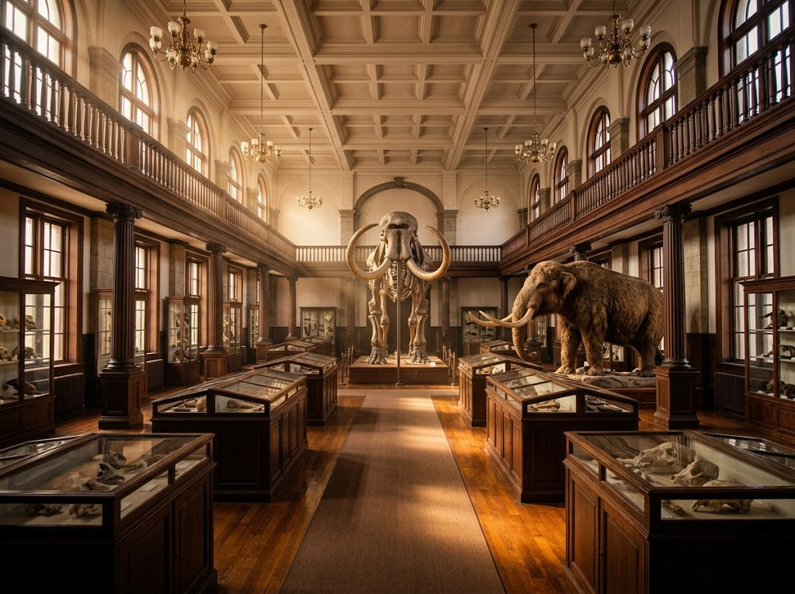
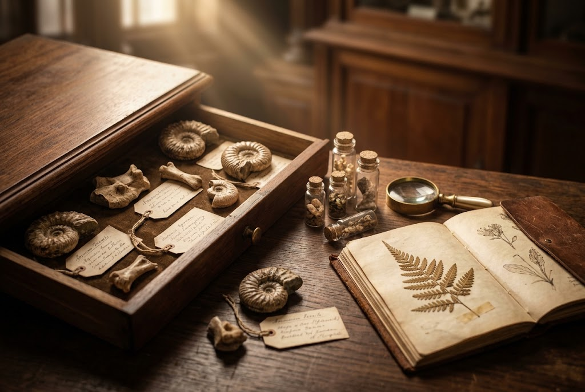

Hokkaido University Museum
札幌・北大キャンパスに佇む、知の殿堂
Concept
北海道大学の140年以上にわたる研究で蓄積された、約300万点の学術標本や資料を展示しています。化石や剥製、さまざまな学部ゆかりの資料まで、大学ならではの奥深い世界をご覧いただけます。

Highlights
140年以上の研究が積み重ねた学術標本・資料
目を引く成雄ホルスタインの巨大な骨格標本
来館者を迎えるマンモスの実物大模型

Atmosphere
緑の多いキャンパスを歩き、歴史ある建物を眺めながら館内へ。展示は分かりやすく、体験型の展示もあり、学びとともに穏やかな時間を過ごせます。
Voice
★★★★★
なんと大学に博物館があります。
各学科の紹介かと思いきや、北大ならではと化石や剥製など見応え満点です。札幌駅から歩いていけるのでオヌヌメです。
★★★★★
近くに宿泊してたので、口コミを見て訪問させて頂きました。門から博物館までの道のりも緑が多く気持ち良かったです。各建物も歴史を感じるものが多くそれらを見ながら歩くのも楽しく、博物館そのものも歴史を感じる事ができ、素敵でした。展示は分かりやすく、色々な学部のものがあり体験型の展示もあり飽きること無く、学びもありかなり楽しく過ごせました。歴史を感じる建物ですが売店近くのトイレが内装をリフォームしていてきれいだったのがプチびっくりポイントでした。
Information
| 施設名 | 北海道大学総合博物館 |
|---|---|
| 住所 | 北海道札幌市北区北10条西8丁目 |
| 電話番号 | 011-706-2658 |
| 定休日 | 月曜日（※祝日は開館し、週明けの平日を休館）、12/28〜1/4 |
| 公式HP | https://www.museum.hokudai.ac.jp/ |
| メール | museum-jimu@museum.hokudai.ac.jp |